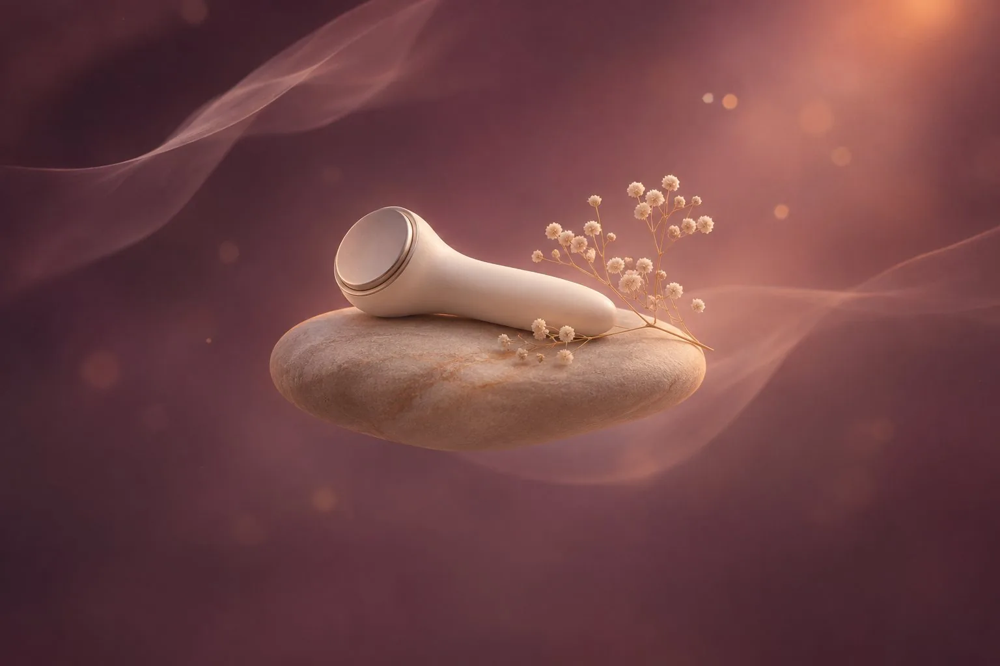

Column A
Treatment Map
148 篇，照問題分好類。
先找到自己的問題落在哪一類，再看那一類的判斷重點。上排是最常被問的五個療程，下排是全部文章的分類。
最常被問的五個療程卡上的標籤對應 7 問第 2 題：處理的是質地、支撐、容量，還是肌肉動態
全部文章，三個欄目
Why
醫美最貴的成本，不一定是價格，而是期待值錯置。
蘇菲餘白專注大健康與自費醫美，由護理師、心臟醫材、醫美營運出身的蘇菲，把複雜的健康與療程資訊翻成一般人看得懂的判斷。
這裡不診斷、不替你決定。只把療程邏輯、風險、預算和恢復期拆開，讓你進診間前就知道該問什麼。

Video Notes
一支短片，只拆一個判斷題。
- 鮪魚小黃瓜海苔真能當瘦瘦針嗎

- 水光裡加了肉毒，妳該問清楚這兩件事

- 做醫美被追問動哪裡，妳可以不說

- 微針電波半年變淡，就算白打嗎？


